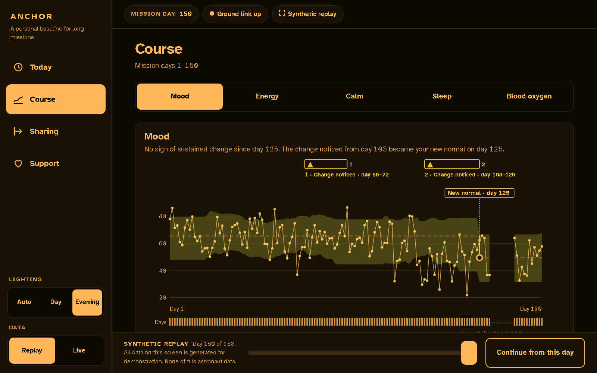
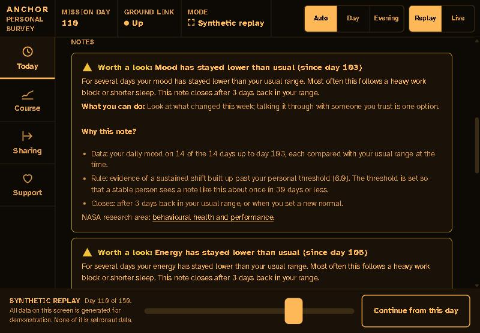

Team ANCHOR · NASA Space Apps 2026
Challenge: Create Health Monitoring Software for Astronauts on Space Missions
A personal baseline for long missions.
A daily wellbeing companion that learns each astronaut's own normal, notices sustained change calmly, never diagnoses, and keeps them in control of what is shared.
Live app: agcpr.github.io/nasa-space-apps-2026-anchor
Code and evidence: github.com/AGCpr/nasa-space-apps-2026-anchor

The problem
NASA's Human Research Program names behavioural health under isolation and confinement as a spaceflight risk, and notes that Mars-distance delays weaken the ground support the ISS relies on.
Crews value privacy (HRP calls it a top priority). When monitoring feels like surveillance, honest self-report is the first thing lost.
Single-reading alerts on noisy wellbeing data cry wolf. Crews learn to ignore them, and the one that matters is missed.
What ANCHOR does
Anchored on pre-flight days. The astronaut can say "this is my new normal", which is reversible and limited.
A sustained-change detector with a false-alert budget of one note per 30 days, verified end to end.
Private by default, consent per category, a sharing log shown before anything is sent, exclusions without exception.
Pre-agreed lines, such as SpO2, are checked by two independently written safety kernels. During loss of signal they re-route to the CMO on board.

The astronaut's evening, 90 seconds
Three bipolar sliders: mood, energy, calm. Words, not smileys. The data is shown only after rating.
Tonight against their own usual range, with confidence and coverage. No composite score.
One calm note per episode, with a step and an owner, never a diagnosis.
A sharing log, per-person exclusions, and a private conference or a crewmate one tap away.
NASA data and resources
| NASA HRP risk | ANCHOR mechanism |
|---|---|
| Behavioural changes | Mood, energy and calm check-in; calm detection without diagnosis; privacy by design, a priority named on the HRP page |
| Sleep and irregular schedules | Sleep indicator; workload days excluded from learning; 2700 K evening rendering modelled on the ISS LED lighting schedule |
| Hypoxia | SpO2 safety line for partially depressurised exploration cabins |
| Cardiovascular, immune, nutrition | Morning pulse, blood pressure, temperature and glucose, each with a safety line; one fever morning reaches the surgeon but never becomes a "several days" note |
| Inadequate teamwork | Trusted-crewmate route; per-person exclusions, including the CMO |
| Systems operations support | Offline, explainable, deterministic, auditable outputs |
| Space radiation | Triple redundancy against bit flips in commercial tablets (NASA NTRS 20060015096) |
Evidence on real people · LifeSnaps · 71 adults · 4 months · CC BY 4.0
of mood days inside the 80% personal range
of sleep days inside it, as designed
fewer notes than a naive single-day rule (one per 224 days against one per 45)
A 1 SD drop in real sleep was noticed within 4 weeks in 52% of people, against 9% by chance (n = 23, wide intervals). 13,376 real records, 0 errors, 6.7 ms per record.
For device-smoothed resting heart rate the band holds only 58%. Two fixes were tested and rejected with numbers, and such signals are now shown as trends only (ADR-0010).
Impact and next steps
Team ANCHOR · agcpr.github.io/nasa-space-apps-2026-anchor · Software built with AI assistance (Claude, Anthropic); see AI_ASSISTANCE.md. No NASA logos are used. All app data shown is synthetic.